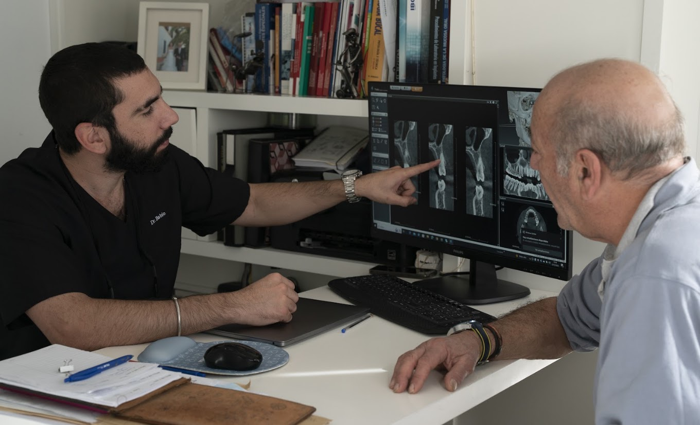

Hueso y encía
El volumen de hueso y el grosor y la posición de la encía condicionan el soporte y el contorno alrededor de la futura pieza.
Sector estético en Sevilla
Reponer un diente en la zona visible de la sonrisa exige estudiar la encía, el hueso y la futura corona, además de recuperar la función.
Consulta también nuestra información general sobre implantes dentales en Sevilla y las alternativas de tratamiento.

El sector estético es la parte de la boca que se ve al hablar o sonreír, especialmente los dientes anteriores. Cuando falta una pieza en esa zona, se estudia tanto la función como su relación con los dientes vecinos y la encía.
El volumen de hueso y el grosor y la posición de la encía condicionan el soporte y el contorno alrededor de la futura pieza.
Se planifica de acuerdo con la restauración que se necesita, el espacio disponible y los tejidos. No basta con ocupar el hueco del diente ausente.
Se estudian el tamaño, el color y el perfil de emergencia: la forma en que la corona sale de la encía. También debe permitir una higiene adecuada.
La exploración permite valorar la línea de la sonrisa, los dientes vecinos, la mordida, los tejidos y el espacio de la pieza ausente. Se revisan los antecedentes y se indican las imágenes necesarias para conocer el soporte óseo y planificar las alternativas.
Si aún está el diente, se evalúa si puede conservarse. Si necesita sustituirse, se explica cuándo colocar el implante, si hace falta tratar el hueso o la encía y cómo cubrir el espacio durante las fases del tratamiento.
Cuando está indicado, el provisional permite valorar la forma del diente y acompañar la adaptación de la encía. No siempre se apoya de inmediato sobre el implante: hay alternativas según la estabilidad y la fase de cicatrización.
La carga inmediata requiere una valoración específica. Antes de la corona definitiva se comprueban los tejidos, el ajuste y la mordida.
La pérdida previa de hueso o encía, una encía fina, las cicatrices, la posición de los dientes vecinos y cuánto se muestra la encía al sonreír pueden condicionar el resultado. Las intervenciones para mejorar los tejidos tampoco garantizan recuperar exactamente la situación original.
En consulta se explican las posibilidades y sus límites, incluidos los tiempos y los cuidados. Las fotografías de otros casos ayudan a entender un tratamiento, pero no predicen un resultado idéntico. Las revisiones y la higiene diaria siguen siendo necesarias.
Se busca que la corona se integre con la sonrisa. No puede garantizarse que resulte indistinguible: influyen los tejidos disponibles y los dientes vecinos.
No siempre. Se valora si el hueso y la encía permiten la solución prevista y si un procedimiento adicional puede aportar un beneficio en tu caso.
Sí. Aporta las pruebas e informes disponibles para estudiar las alternativas. Puedes consultar nuestra información sobre revisión de implantes con problemas.
Información para pacientes de Clínica Dental Doctor Babío. Conoce la formación y trayectoria del director médico.
Actualización del contenido: .
Siguiente paso